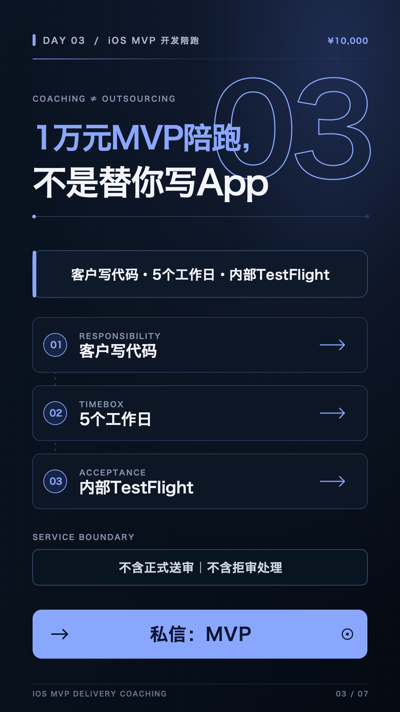

DAY 03 · ¥10,000 MVP · 私信「MVP」
MVP 陪跑，不是替客户写 App。
客户完成代码；服务价值在需求冻结、代码审查、排障与每日任务安排，终点是内部 TestFlight。
今日验收
- 发布视频、X、小红书。
- 完成 7 条精准互动。
- 2 个有效私信、1 份 MVP 范围资料。
10 小时安排
- 区分诊断与 MVP 线索。
- 写清客户代码责任和五日节奏。
- 录制、剪辑任务拆解内容。
- 按 MVP 七问收集范围事实。

打开 Day 3 竖屏封面 PNG ↗